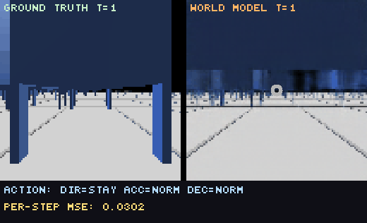
Visual perception · imagined dynamics · a tiny linear policy that never touches the real environment during training.
Modern RMFS deployments (Amazon Robotics, Geek+) are orchestrated by a central planner — a MAPF solver (CBS, BCP, A*) that computes paths for the entire fleet simultaneously.
A single OS-level failure halts the planner. Every robot freezes mid-path. There is no fallback.
TCP/wireless dropout strands robots without new paths. They either stop or run a stale plan into a wall.
A single bot reporting unknown state triggers full-fleet replanning — combinatorial cost.
| Failure | Centralized Response | Operational Impact |
|---|---|---|
| Server crash | Full fleet halt | 100% downtime |
| Network partition | Robots frozen, no paths | Local zone halt |
| Single robot failure | Trigger full replan | All robots pause |
| Picker delay | Cascading reschedule | Throughput drop |
Decentralized = each robot owns a local policy and observes the world via its own sensors. One robot fails → the rest continue operating.
The challenge: how do robots make smart decisions without seeing the whole map? Old answer — rule-based. New answer (this work) — a world model.
Variational autoencoder. Stacked conv layers. Reconstruction + KL loss.
LSTM with 5-component Gaussian mixture head. Reward head co-trained.
One matrix + bias. Trained in dreams via CMA-ES.
| Component | H&S 2018 | Ours (RMFS) |
|---|---|---|
| Environment | VizDoom (64×64) | RMFS warehouse (96×96) |
| Frame stacking | Single frame | 2-frame stack (motion cue) |
| Action space | 3 discrete | 11-dim (override · dir · accel · decel) |
| Reward | Continuous | Sparse (throughput − collision) |
| Episodes | Game rollouts | 20 ep × 32 bots × 1 000 steps |
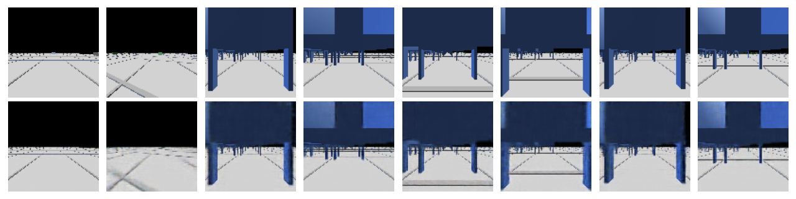
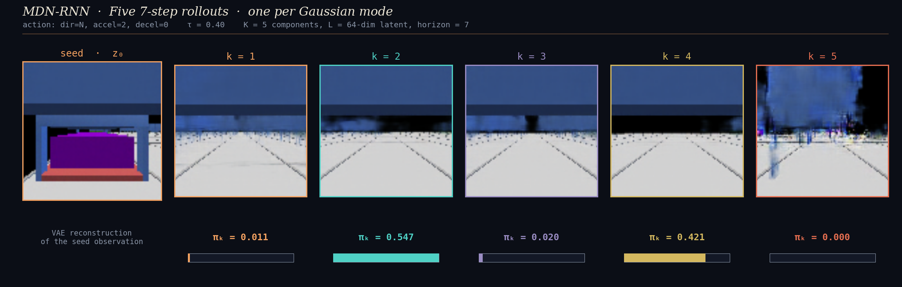
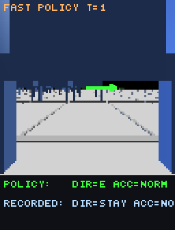
Override-aware action: override = 0 defers to A*; override = 1 picks an explicit direction. The controller intervenes only when beneficial — a hybrid by design.
Real motion model — acceleration, deceleration, turning radius. Continuous spatial state, not a grid abstraction. Comparable to real Kiva-style dynamics.
GymServer streams 96×96×3 RGB from each robot's perspective — identical to what a real robot would see. Critical for our methodology: we train on pixels, not coordinates.
Built-in: CBS · BCP · FAR · WHCA* · OD_ID · PAS — for honest benchmarking against the strongest centralized planners.
C# implementation. Standard benchmark instances. Other groups can replicate or contest our numbers.
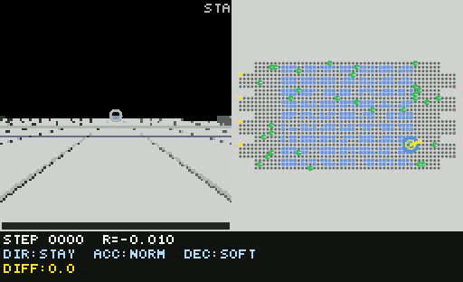
The left panel is ground truth from the simulator. The right panel is the world model imagining the future given the same actions. The robot has never seen this future — it is hallucinated.
Honest framing: 50-step horizon is challenging — the model was trained for 1-step prediction. Errors compound. That is expected and healthy.
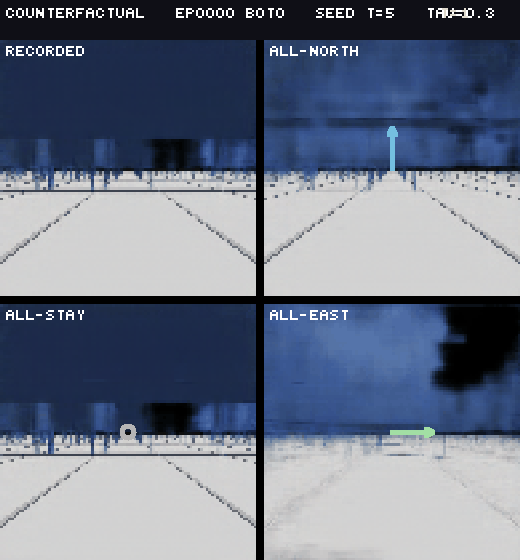
Same seed frame. Same world model. Four different action sequences. The four panels diverge — proof that the model conditions on action, not just memorising trajectories.
Key insight: divergence is not noise — it is systematic, action-driven. This is what makes the model useful for planning.
This is the deployed controller running in real time. For each frame from the simulator, it does one forward pass: V → C → action. No imagination, no planning ahead.
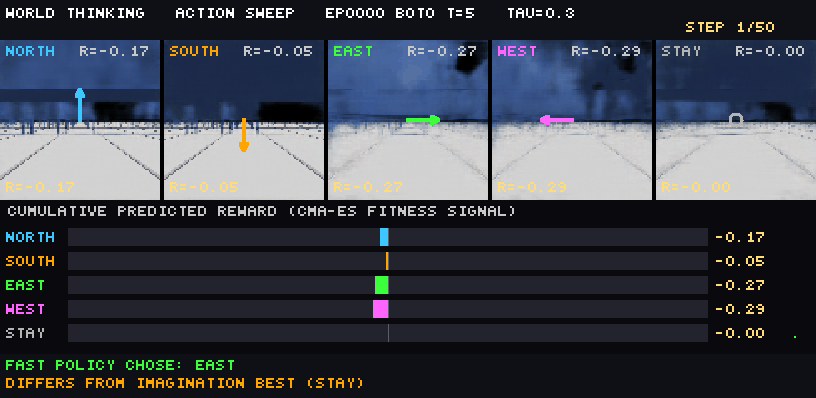
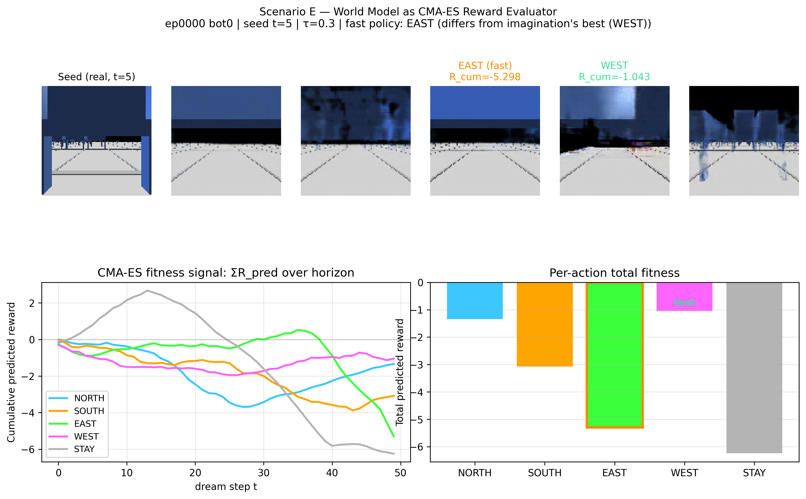
During training, the controller never touches the simulator. For each weight vector W, we run a
dream rollout, sum predicted rewards, and that becomes the fitness.
From a single seed, 5 candidate actions yield 5 different cumulative rewards — visible
only through the world model.
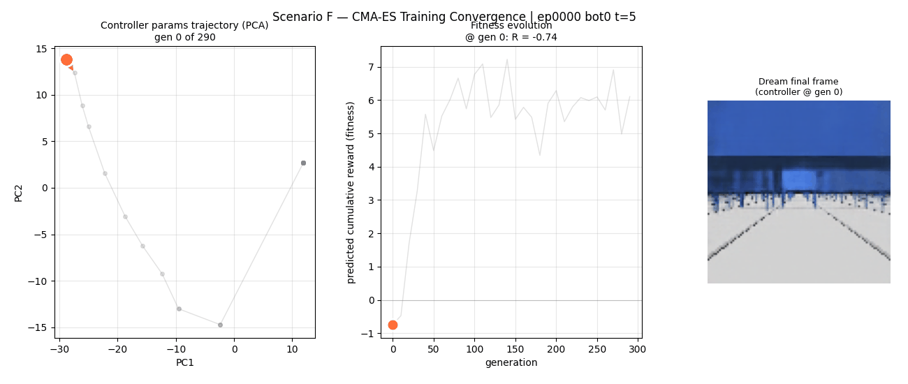
30 saved checkpoints during training, projected via PCA to 2D. Each dot is one generation's controller. Colour = fitness through the world model.
PC1 explains 57.7% of parameter variance · trajectory is curved (CMA-ES ≠ gradient descent) · best controller is mid-training, not at the end.
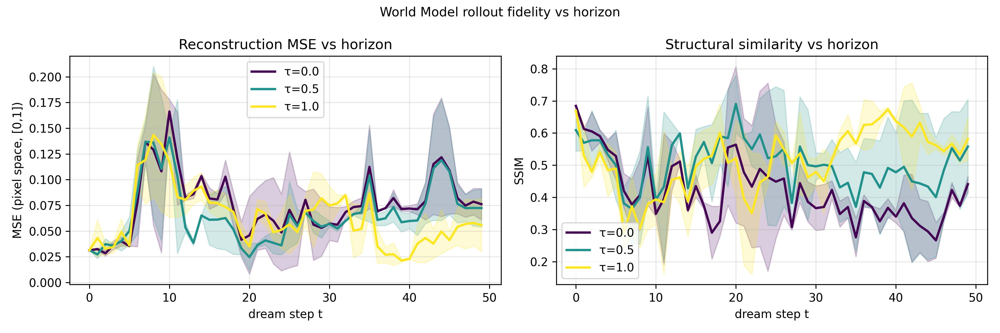
Honest evaluation. MSE rises with horizon — autoregression compounds pixel errors. SSIM drops from 0.68 to 0.45 by t = 49 — structural similarity also degrades. τ = 0.5 (balanced temperature) maintains best fidelity.
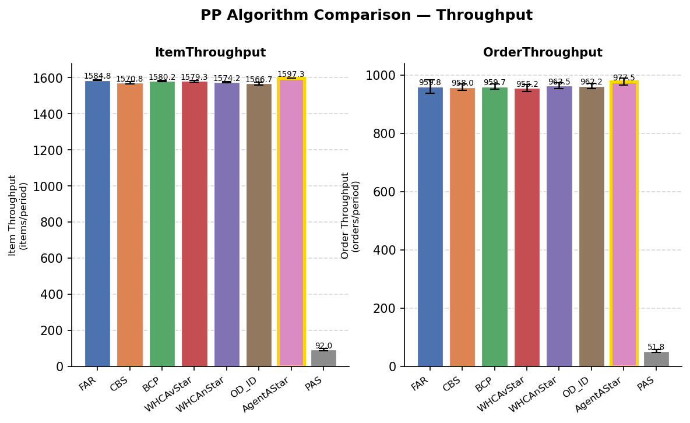
| Algorithm | Items | Collisions | Distance (m) |
|---|---|---|---|
| FAR | 3,172 | 0 | 78,289 |
| CBS | 3,152 | 0 | 81,735 |
| BCP | 3,157 | 0 | 85,295 |
| WHCAvStar | 3,166 | 0 | 80,363 |
| WHCAnStar | 3,147 | 0 | 79,957 |
| OD_ID | 3,120 | 0 | 78,773 |
| AgentAStar | 3,197 | 1,339 | 85,711 |
Centralized planners (top 6) coordinate perfectly. AgentAStar (decentralized rule-based) handles slightly more items but at the cost of 1,339 collisions per episode.
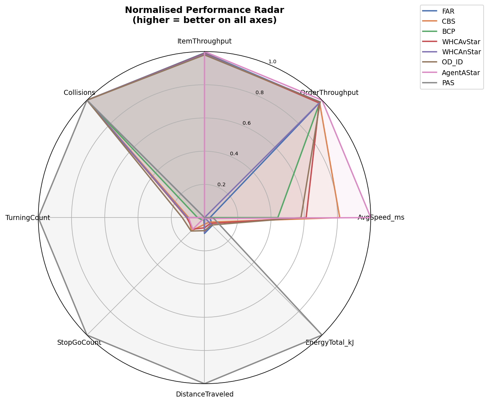
| Method | Decentralized | Collisions | Status |
|---|---|---|---|
| Centralized (CBS / BCP / FAR / WHCA) | ✕ | 0 | Mature baselines |
| AgentAStar (rule-based) | ✓ | 1,339+ | Built-in baseline |
| Our World Model (in-dream) | ✓ | TBD | Training done · real-eval next |
The architecture is set; we now need integration testing.
World models reframe RMFS control as imagination + a tiny linear policy.
We showed it learns visual dynamics from pixels alone, with action conditioning that drives different imagined futures.
With 3,531 controller parameters and zero real-environment training steps, we have a decentralized agent ready for real-environment benchmarking.
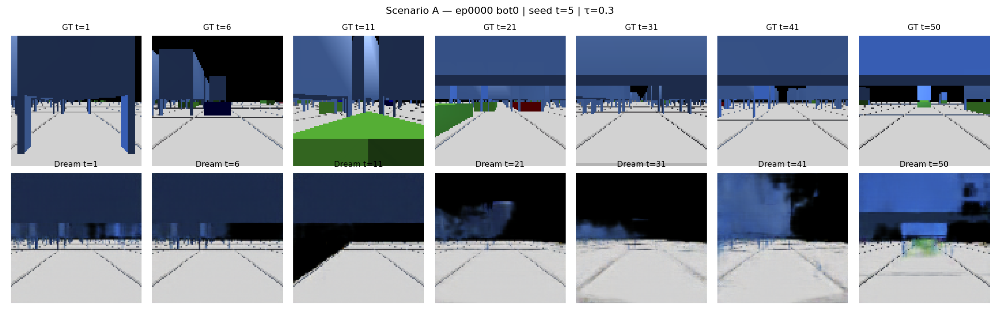
Reconstruction at t = 1 reaches ~0.02 MSE — that's our V floor. Anything above that in dream rollouts is the dynamics model contributing error, not the encoder.
| Component | Time | Hardware | Notes |
|---|---|---|---|
| VAE training | ~2 h | 1× consumer GPU | 20 epochs · MSE + KL |
| MDN-RNN training | ~4 h | 1× consumer GPU | 100 epochs · NLL |
| CMA-ES (290 gen) | ~8 h | 32 CPU cores | parallel candidate eval |
| Total | ~14 h | — | all offline |
| PPO equivalent | 24+ h | 1× GPU + sim | online · single-stream |
Dream rollouts parallelize trivially — no shared simulator state. We saturate CPU cores rather than wait on a single env.
More episodes = more V/M data, but C training cost is independent. The expensive piece is the data collection — and that runs on existing simulator infra.
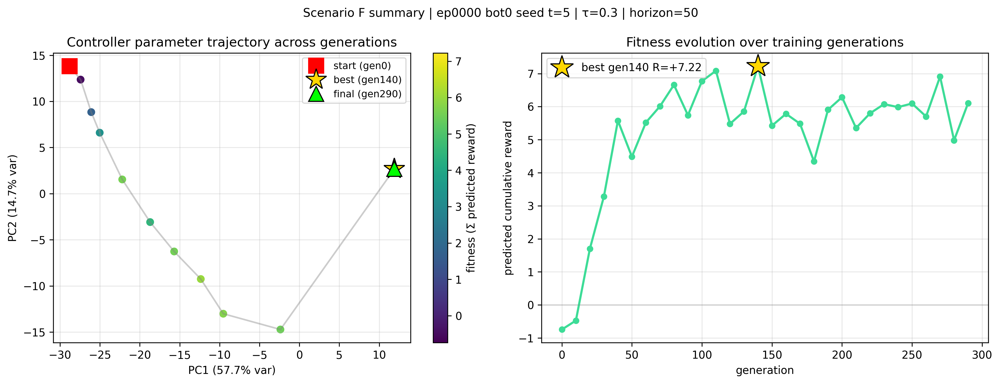
Past horizon ~30, the model collapses to mean output — pure black sky + a generic corridor floor. Fine-grained pod and bot details disappear.
We choose not to plan past the model's reliable horizon.
| Method | Action handling | Sparse reward | Compute |
|---|---|---|---|
| REINFORCE | Continuous OK | Poor | High variance |
| PPO | Continuous OK | Adequate | Online sim required |
| CMA-ES | Discrete argmax OK | Robust | Offline-only |